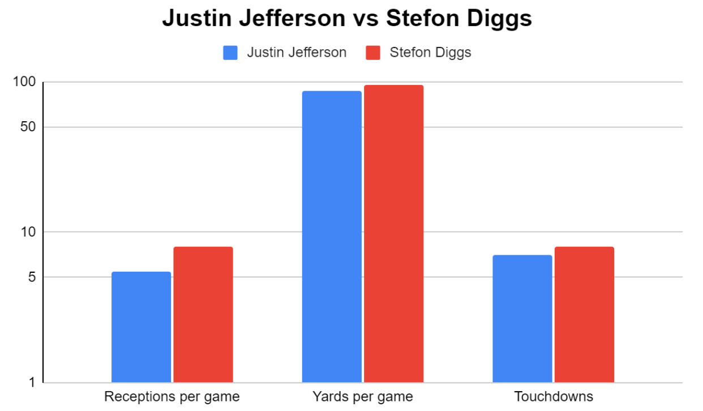

A Rare Trade Where Both Sides Won
By Siddarth Srivastava | March 30, 2021
The Vikings traded Stefon Diggs for a first-round pick to the Bills during the 2020 offseason. This seems to be a trade where both sides were winners, which doesn’t happen very often in the NFL for big trades(see the Deandre Hopkins and Jamal Adams trades). The Vikings used that pick to draft Justin Jefferson, who went on to have a historic rookie season. Stefon Diggs also in his own right had an amazing year for the Bills. He emerged as a definitive top 5, arguably top 3 receiver, in the NFL and was AP First Team All-Pro.
The Bills needed to capitalize on Allen’s rookie contract and get him an established WR1. Someone who is a truly elite separate separator and can give Allen confidence and allow him to continue his progression. They didn’t know which receiver would be there when they picked in their draft, and considering they haven’t drafted a great receiver in a long time and free agency didn’t have any elite guys available(best receiver on the market was Robby Anderson), for them it made more sense to trade for a sure thing in Diggs who fit exactly what they wanted to do. This also allowed Beasley and Brown to turn into a good 2A and 2B duo out of the slot and as a deep threat. The whole offense in general took a major step forward, largely due to Allen’s progression, which had a lot to do with Diggs being there.
The Vikings meanwhile, could afford to take a chance on a rookie receiver. They already had an established run game with Dalvin Cook and a serviceable WR1 in Adam Thielen, and with them already paying Thielen and Cousins along with Cook’s contract coming up, they had to offload somewhere. Saving money at the WR position with a rookie on a cheaper deal than Diggs’ was great value. The 2020 receiver class was deep, and it was good odds even at 21 they would get a good one. Jefferson being there they probably didn’t expect, especially with the Eagles taking a different WR the pick right before them. It worked out for them perfectly however, and they were able to get a guy who put up similar numbers to Diggs for a fraction of the cost. Jefferson ended up being an All-Pro as well and could have easily been Offensive Rookie of the Year.
Both teams got exactly what they were looking for, and Jefferson’s and Diggs’s stats in most categories were truly almost identical.
It’ll be exciting to watch how their careers continue to progress and this trade will be one that is talked about even years from now as it played a big role in changing the trajectory of Josh Allen and the Bills as well as got the Vikings perhaps their most talented receiver since Randy Moss. Good to see a trade where both teams benefited and both players also thrived, doesn’t happen very often in the NFL.